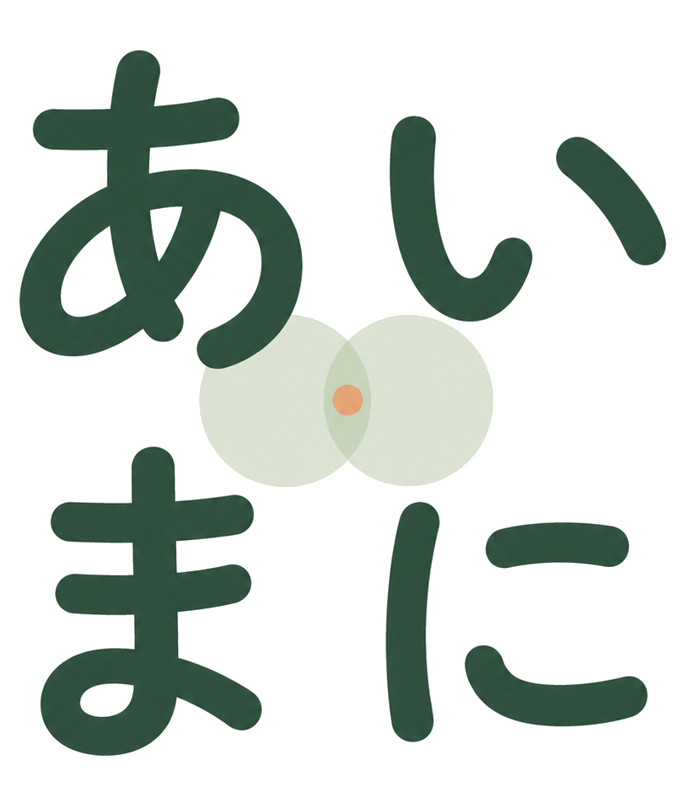

現役看護師が、屋号「あいまに」で活動しています。
デジタルの困りごと、AIの導入、Instagramの運用まで。
専門用語を使わず、あなたのペースに合わせて伴走します。
まずは今困っていることを聞かせてください。
「何を頼めばいいか分からない」でも大丈夫です。
困っていることに合わせて、3つの窓口をご用意しています。
「離れて住む親とビデオ通話したいけど、設定しに行く時間がない」「AIは怖い。でも使ってみたい」——そんな暮らしの困りごとから、パソコンの購入・初期設定、作業の自動化、ホームページづくりまで。「何ができるか、まず相談したい」だけでもOKです。
1時間 4,000円〜／料金の目安を見る
相談フォームへ医療・介護の現場の書類仕事や個人情報への配慮を中心に、AIで日々の業務を時短します。見積書・案内文・問い合わせ対応・発信など、中小企業・個人事業主の方ももちろん歓迎です。
各種診断 10,000円〜／料金の目安を見る
無料相談・AI時短診断を相談する 医療・介護向けの詳細・料金まずは小さく始められる料金をご用意しています。内容が決まっていないご相談・お見積もりは無料です。
（料金はこのページに一本化しています）
店舗購入同行 10,000円ぽっきり（延長料金なし・一緒に選んで買うまで）
パソコン初期設定サポート 10,000円（新品1台まるごと）
オンライン購入サポート 5,000円（機種選び〜注文）
何でも相談・トラブルは 1時間 4,000円／2時間 7,000円
移動費は別途です。
AIレクチャー 1時間 4,000円
2時間お得パック 7,000円
AI時短診断 10,000円（その場で1つ時短を設定）
AI検索露出診断 10,000円（60回実測のPDFレポート）
属人化診断 10,000円（その場で手順書1本を作成）
月イチ伴走 月12,000円
キャプション提供 月15,000円
まるごと代行 月30,000円
投稿頻度・枚数はご相談のうえ決めます。
Webページ作成は 50,000円〜。業務に合わせた設定・制作・継続支援は、内容を伺ってから事前にお見積もりします。
IT業者さんや広告代理店とは、スタート地点が違います。
医療・介護の現場はもちろん、個人事業や小規模店舗の「人手が足りない」「時間がない」感覚も、自分自身が副業をしながら実感しています。説明に時間がかからず、相談が早く核心に届きます。
「プロンプト」「API」「アルゴリズム」といった言葉は使いません。パソコンやスマホが苦手な方にも、分かる言葉で説明します。
医療・介護の現場では、患者さま・利用者さまの個人情報をAIに入力しない設計を徹底しています。どのサービスでも、この線引きの感覚を大事にしてお手伝いします。
パソコンなら使えるようになるまで、AIなら業務に定着するまで、隣で一緒に手を動かします。「まずは相談だけ」から「継続して任せたい」まで、無理に大きな契約を勧めません。
パソコン・スマホ・ネットのことなら、仕事の困りごとも、暮らしの困りごとも、何でもご相談ください。
買うところから、設定が終わって使えるようになるまで、同じ人が最後まで担当します。
医療・介護の現場の書類仕事や、個人情報への配慮を中心にしたAI導入支援です。
見積書・案内文・問い合わせ対応・発信など、中小企業・個人事業主の業務効率化も、もちろんご相談ください。
「投稿する時間がない」「何を書けばいいか分からない」を、まるごとお手伝いします。
どのサービスも、お申し込みから着手まで同じ4ステップです。
今、困っていること・やりたいことを教えてください。分からない欄は空欄でも大丈夫です。
メールで、内容を詳しく伺います。
内容に合わせて、できること・料金の目安をご提案します（お見積もりは無料です）。
ご納得いただいたうえで、実際の作業を始めます。
現役の看護師です。本業を続けながら、副業として「あいまに」の屋号で活動しています。
デジタルの困りごと相談、中小企業・個人事業主のAI導入支援、Instagram代行運用の3つを、現場で人手や時間が足りない感覚を知っているからこそのペースで、お手伝いしています。医療・介護のAI活用も専門領域です。
「あいまに」＝AIが、あなたに“あいま（合間）”をつくる。手のかかる作業をAIに任せて、生まれた時間を本当に大事なことに使ってほしい。そんな思いで名づけました。
デジタルのこと、AIのこと、Instagramのこと。
迷ったら、まずは相談フォームにひとこと書いてみてください。